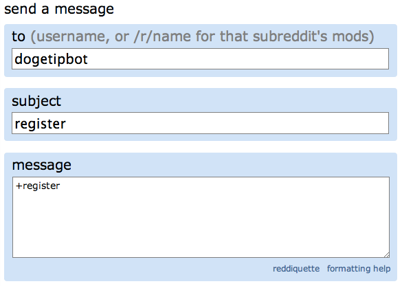
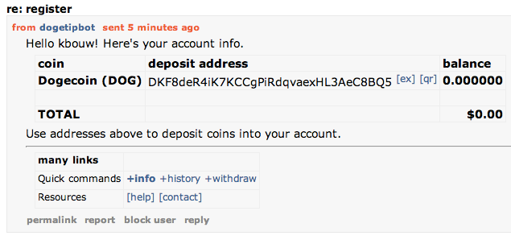
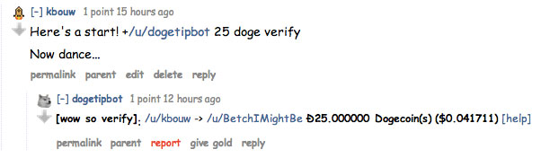
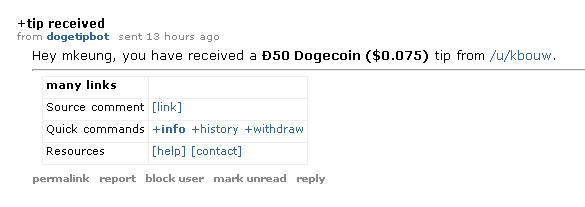
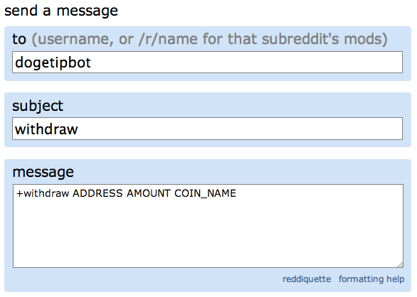
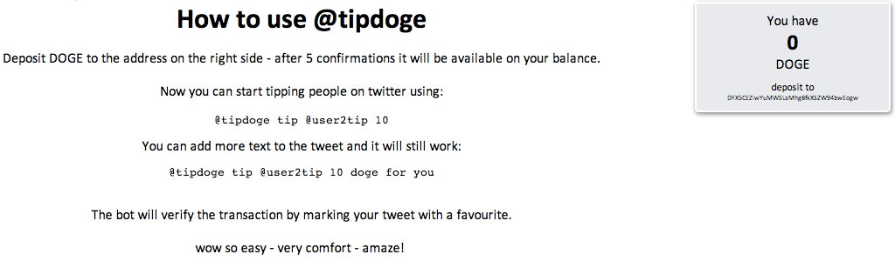
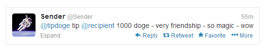
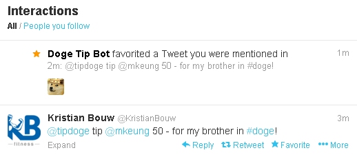
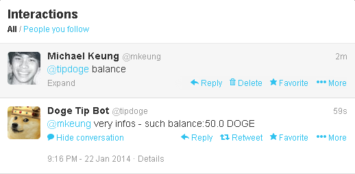
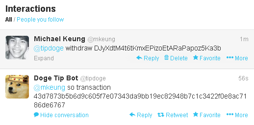

Tipping with Reddit
1. Register with the tip bot
To register with the dogetipbot, you can direct message the bot with +register. You should receive your confirmation almost instantly but during high volume periods of traffic, it may take longer. A further explanation of its recent slowness is found here.
Note: This step is not required if you have previously received a tip from a fellow shibe. The dogetipbot automatically creates a tip account for redditors who have received a tip but have not yet registered. Many smarts!
2. Deposit to the balance
Your registration confirmation will include your deposit address and current balance. If you want to deposit dogecoin into your tipbot account, just send doge to the provided address. If for any reason you forget your deposit address or tipbot balance, just message +info to the dogetipbot.
3. Send tips in your comments / replies
Once you have sent coins to your tip bot balance, you can tip fellow redditors by including something like "+/u/dogetipbot 100 doge - here's some doge!" in your comments and replies. If you want the tip bot to reply as well, make sure to include "verify", like "+/u/dogetipbot 100 doge verify". Check out the dogetip getting started guide for further information.
The receiver of the tip will get a confirmation message if the tip successfully went through.
4. Withdraw tips you receive
To withdraw tips you have received from your balance, you can direct message the dogetipboth with +withdraw.
View your tipbot recieve / withdraw history
If you want to view your transaction history, you can direct message the dogetipbot with +history and receive a detailed report.

INSERT SECOND IMAGE
Check your balance and send address
If you need to check your tipbot balance or forget your send address, you can direct message the dogetipbot with +info to receive a reply with both.
Tipping with Twitter
1. Register with the tip bot
Visit this link and log in with your twitter credentials.
2. Make a positive balance
After authenticating your account, you'll receive a series of instructions for depositing Dogecoin to begin tipping. Below is a screen shot of what you should see.
Send tips!
Below is an example of how to use the tip bot once you have a positive balance:
When you send a tip over twitter, your tweet will receive a favorite by the dogetipbot if it was successfully sent.
Note: the amount received by the bot will have a 1 Doge reduction because a Doge transfer consumes 1 Doge. For example, if you gave a tip of 50, the recipient will receive 49.
Collect tips!
To review your twitter doge balance, politely ask the dogetipbot by replying with balance.
To withdraw your monies, just provide the the dogetipbot with your send address and it will kindly send you your doge fortune!
